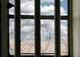

پذيرش > سایت نوشته ها > هفت بازداشت و ۱۳ سال زندان برای فعالان زن / گزارشی از وضعیت زنان زندانی سیاسی در خرداد (...)


 هفت بازداشت و ۱۳ سال زندان برای فعالان زن / گزارشی از وضعیت زنان زندانی سیاسی در خرداد ۱۳۹۰ هفت بازداشت و ۱۳ سال زندان برای فعالان زن / گزارشی از وضعیت زنان زندانی سیاسی در خرداد ۱۳۹۰
4 تیر 1390 - حمیده نظامی - نسخه قابل چاپ
در خرداد ماه جاری هفت نفر از فعالان زن بازداشت شدند و شماری از فعالانی که در دو سال گذشته بازداشت و از سوی دادگاه به حبس محکوم شده بودند، به زندان احضار شدند. جانباختن هاله سحابی، زندانی سیاسی که به دلیل بیماری پدرش به مرخصی آمده بود و بر اثر برخورد ماموران امنیتی در مراسم تشییع پیکر پدرش جانباخت، از دیگر رخدادهای یک ماه گذشته در رابطه با زندانیان زن و فشارهای امنیتی وارده بر فعالان زن است.
هفت بازداشت و۱۴تفتیش منزل
در پی تفتیش منزل و بازداشت تعدادی از شهروندان بهایی در شهرهای تهران، اصفهان، شیراز و زاهدان،افروز فرمانبرداری از شهروندان بهایی بازداشت شد. همچنین ماموران امنیتی با ورود به منازل صدف ثابتیان، رکسانا میرکاظمی، فرازنه تحقیقی، انیسا رحیمی، وفا میثاقیان، شهناز سمیعی، نگین قدمیان، آیدا طائف، طلوع گلکار، نوشین خادم، نسیم باقری، نگار باقری، آزیتا رفیعزاده منازل آنها را تفتیش کردند.
سیده زهرا محمدی (ساناز) نیز سوم خرداد ماه به محض ورود به ایران در فرودگاه بینالمللی تهران توسط نیروهای امنیتی بازداشت شد. وی از همراهان جنبش سبز بود که پس از انتخابات برای ادامه تحصیل و برخی مشکلات سیاسی، به آمریکا رفته بود.
در بند انزلی نیز راحیل آشناگر، وبلاگ نویس و فعال حقوق زنان، سه شنبه ۱۰خرداد ماه در منزلش توسط ماموران امنیتی به اتهام اقدام علیه امنیت ملی دستگیر شد و دوشنبه ۱۶خرداد ماه، با تودیع وثیقه ۲۰میلیون تومان، آزاد شد.
منصوره بهکیش، از مادران عزادار پارک لاله و از اعضای خانواده جانباختگان دهه ۶۰ از دیگر بازداشتشدگان خرداد ماه است. وی که شش برادر و خواهر خود را در اعدام زندانیان سیاسی از سوی جمهوری اسلامی از دست داده است، ۲۲ خرداد دستگیر و پس از انتقال به پلیس امنیت به زندان اوین منتقل شد.
زهرا یزدانی روزنامه نگار و فعال اجتماعی نیز ۳۱ خرداد ماه پس از تفتیش منزل، بازداشت شد. این روزنامهنگار از شاگردان محمدعلی طاهری، محقق ایرانی و بنیانگذار طبهای مکمل «فرادرمانی» و «سایمنتولوژی» است که از ماه گذشته برای سومین بار توسط نیروهای امنیتی بازداشت شده و در اعتصاب غذا به سر میبرد.
در آخرین روزهای خرداد ماه نیز مریم مجد، عکاس از فعالان مطبوعاتی و عکاس مطبوعاتی ایران، در حالیکه قصد سفر جهت عکاسی از جام جهانی فوتبال زنان در آلمان داشت، توسط ماموران امنیتی بازداشت شد. در همین راستا میزبان آلمانی وی، ضمن ابراز نگرانی شدید، به خصوص با توجه به تجربههای مشابه در جمهوری اسلامی، در نامهای از وزارت خارجه آلمان خواست که از مقامات ایرانی درباره ناپدید شدن مریم مجد توضیح بخواهند.
محکومیت فعالان زن به ۱۳ سال زندان
در خرداد ماه جاری سعیده کردینژاد، دانشجوی کارشناسی ارشد اقتصاد انرژی و عضو شاخه جوانان جبهه مشارکت ایران اسلامی، که تیرماه ۸۸ در دانشگاه تهران مرکز بازداشت شده بود، به دو سال حبس قطعی محکوم شد.
ژیلا رضایی شهروند بهایی ۴۵ساله بهایی، نیز ۱۵خرداد به ستاد خبری اطلاعات ساری احضار شد. وی مادر درسا سبحانی است که در زمستان سال گذشته توسط اطلاعات سپاه در ساری بازداشت شد و به بند دو- الف زندان اوین منتقل شد. درسا سبحانی مدت ۴۵روز را در بازداشت به سر برد و در دادگاه بدوی به یک سال حبس تعزیری و در دادگاه تجدید نظر به مدت پنجسال این حکم به حالت تعلیق درآمد .
از سوی دیگر اولین دادگاه رسیدگی به پرونده ابطال پروانه وکالت نسرین ستوده، هشتخرداد با حضور نسرین ستوده در کانون وکلای دادگستری برگزار شد. عضو هیات رییسه کانون و چند تن از وکلا به عنوان قاضی به بررسی پرونده ابطال و یا عدم ابطال پروانه وکالت نسرین ستوده پرداختند و تصمیم به برگزاری دادگاه تجدید نظر در زمانی دیگر گرفته شد . ستوده در این جلسه برای اولین بار با دستبند به دادگاه آورده شد.
همچنین حکم اشد مجازات برای مهسا امرآبادی روزنامهنگار که به اتهام اقدام تبلیغی علیه نظام از طریق مصاحبه و گزارش، در دادگاه تجدید نظر به یک سال زندان تأیید شد.
اشرف علیخانی وبلاگ نویس نیز که به اتهام «اجتماع و تبانی به قصد ارتکاب جرایم علیه امنیت ملی کشور، از طریق شرکت عامدانه در اغتشاشات خیابانی، فعالیت تبلیغی علیه نظام از طریق ارتباط با شبکه ماهوارهای ضد انقلاب» به سه سال حبس قطعی محکوم شده بود، به زندان احضار و بازداشت شد.
در همین ماه هانیه فرشی شتربان، وبلاگنویس تبریزی از سوی دادگاه انقلاب به اتهام توهین به رهبری و مقدسات به هفت سال زندان محکوم شد. او از تاریخ ۲۷تیر ماه ۱۳۸۹در بازداشت به سر میبرد.
بر اساس گزارهای منتشر شده، پریوش سطوری، همسر دکتر حسین فاطمی و از نزدیکان رحیم مشایی، نیز پس از آزادی موقت، پنجم خرداد ماه، از ایران خارج و با یک پرواز مستقیم به لندن رفت.
ملاقات حضوری زندانیان سیاسی پس از ماهها انتظار
در خرداد ماه جاری بعد از گذشت نزدیک به دو سال از موج دستگیری و بازداشت فعالان سیاسی و اجتماعی، برای اولین بار در سوم خرداد ماه سال جاری به مناسبت روز زن به ۱۲تن از زندانیان سیاسی زن اجازه داده شد تا به صورت حضوری با خانوادههای خود ملاقات کنند. بهاره هدایت پس از ۱۳ماه، نسرین ستوده بعد از ۹ماه و مهدیه گلرو پس از سه ماه توانستند با خانواههایشان دور یک میز ملاقات کنند.
هنگامه شهیدی، روزنامهنگار، مشاور دبیر کل و عضو حزب اعتماد ملی، نیز در خرداد ماه جهت مرخصی به طور موقت آزاد شد. مدت محکومیت او شش سال و سه ماه و یک روز حبس تعزیری است که در حال گذران آن در زندان اوین است.
از احضاریهها تا شرایط نامناسب زندانها
در حالیکه بازداشت فعالان زن همچنان ادامه دارد، هر روز بر تعداد احضاریهها برای زنانی که بعد از حوادث انتخابات محاکمه شده و حکم قطعی گرفتهاند، نیز افزوده میشود. این در حالی است که بند قرنطینه زنان، محل نگهداری زندانیان سیاسی زن، به هیچ وجه ظرفیت پذیرش زندانی جدید را ندارد .
در حال حاضر بیش از ۳۰زندانی سیاسی و عقیدتی زن در سالنی ۴۰تا ۵۰متری در بند قرنطینه اوین نگهداری میشوند. پس از انتقال هشت زندانی سیاسی از قرچک ورامین به این بند، فضا بسیار تنگتر شده است به طوری که برخی از زندانیان «کف خواب» هستند.
انتقال یک زندانی سیاسی زن به یک مرکز روانی
بر اساس گزارشهای منتشر شده از وضعیت زندانها، زنان زندانی به لحاظ پزشک، دارو و درمان در مضیقه هستند، به مراجعات آنان در رابطه با بیماریشان هیچ اهمیتی داده نمیشود و این زندانیان در مقابل بیماریشان از طرف پزشکان زندان با پاسخهای نامربوط مواجه هستند.
زهرا جباری زندانی سیاسی که از وضعیت بد جسمی و فشارهای روحی در زندان اوین رنج میبرد به دستور پزشکی قانونی به جای آزادی از زندان به مرکز روانی امین آباد منتقل شد. او پیش از این به اتهام اقدام علیه امنیت ملی چهار سال حبس تعزیری محکوم شده بود.
همچنین اشرف علیخانی وبلاگ نویس، که سوم خرداد ماه زندان احضار شد، از بیماری قلبی در رنج است.
روز زن و گزارش شکنجه و تجاوز در زندان زنان
از سوی دیگر زندانیان سیاسی زن محبوس در بند قرنطینه زندان اوین همزمان با فرارسیدن روز زن طی بیانیهای با تشریح وضعیت خود، توجه مقامهای قضایی را به رفتارهای غیرقانونی صورت گرفته با خود، جلب کردند. سواستفاده بازجویان مرد، از مسائل جنسی و تهمت جنسی و اجبار به اعترافات دروغین علیه خود و دیگران، با ذکر جزئیات، ضرب و شتم و شکنجه، حبس در انفرادی، محرومیت از حق ملاقات و تماس، محرومیت از ملاقات با وکیل، عدم رعایت اصل تفکیک جرایم و امکانات اولیه و رفاهی، صدور حکم تبعید به زندانهایی با کمترین استانداردها از جمله موارد مطرح شده در این بیانیه بود.
در همین راستا کمپین بینالمللی حقوق بشر در ایران ۲۱خرداد ویدیوی شهادت یک زن جوان بازداشت شده را منتشر کرد که در آن وی شرح شکنج شدید و تجاوز جنسیاش را بیان میکند. گواهی این زن، روایت مقامات ایرانی، مبتنی بر انکار استفاده گسترده از شکنجه و تجاوز توسط نیروهای امنیتی علیه اعتراض کنندگان عادی را به چالش میکشد.
رادیو زمانه
ارسال به
بالاترین
،
توییتر
،
فریندفید
،
فیسبوک
در همين بخش :
 یک خبر تلخ؟ یک قانونشکنی؟ یک تصمیم بخشنامهای جدید؟ یک خبر تلخ؟ یک قانونشکنی؟ یک تصمیم بخشنامهای جدید؟
چرا بایست به سکسوالیته پرداخت؟ / نفیسه آزاد
آزارجنسی خانگی؛ «قربانی» نه، «نجات یافته»
زنان، بزرگترین بازندگان بهار عرب
سانسور از دیدگاه جنسیتی/الهه امانی
ديگر بخش ها :
طرح یک میلیون امضا
|
مقالات
|
سایت نوشته ها
|
اخبار
|
گزارش كمپين
|
گفت و گو
|
علیه سکوت
|
كوچه به كوچه
|
نامه های شما
|
گزارش ویژه
|
گفتگو با اعضا
|
ویژه سالگرد کمپین
|
تصویر برابری
|
دل آرام علی
|
تریبون
|
مقالات
|
تاریخ شفاهی
|
خارج از چارچوب
|
کتابخانه
|
درباره کمپین
|
کمپین در شهرها
|
کمپین در بند
|
صدای تغییر
|
ویژه 22 خرداد
|
لایحه حمایت از خانواده
|
گالری
|
عشا مومنی
|
امیر یعقوبعلی
|
خدیجه مقدم
|
راحله عسگری زاده و نسیم خسروی
|
پروین اردلان،جلوه جواهری، مریم حسین خواه، ناهید کشاورز
|
زینب پیغمبرزاده
|
سعیده امین، سارا ایمانیان، محبوبه حسین زاده، ناهید کشاورز و همایون نامی
|
احترام شادفر
|
نسیم سرابندی زاده،فاطمه دهدشتی
|
وبلاگ مهمان
|
پرونده خرم آباد
|
دستگیری ها
|
مریم مالک
|
پرستو اللهیاری
|
مهرنوش اعتمادی
|
سمیه رشیدی
|
Other Languages
|
همراهان
|
«فراخوان کمپین ده روز با بهاره هدایت»
| English
|